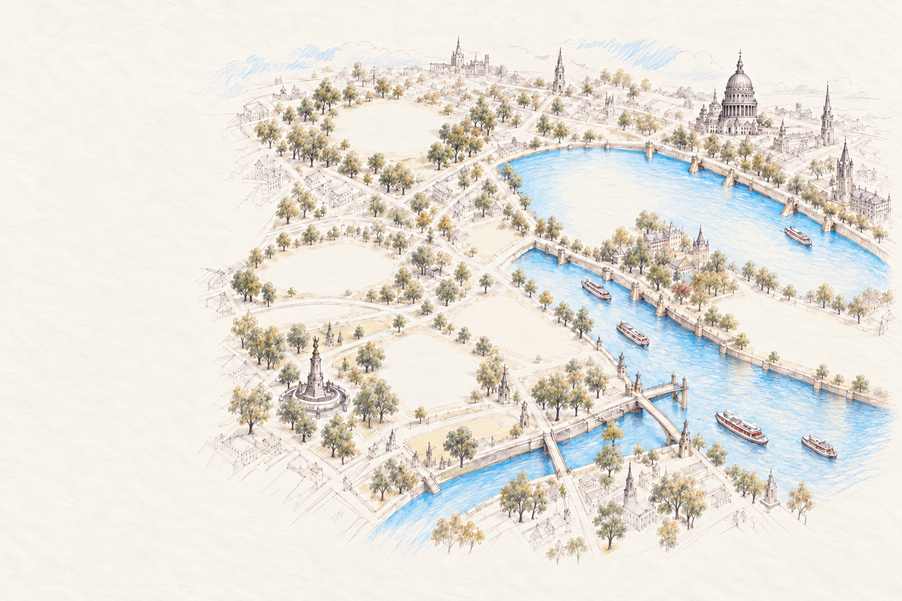
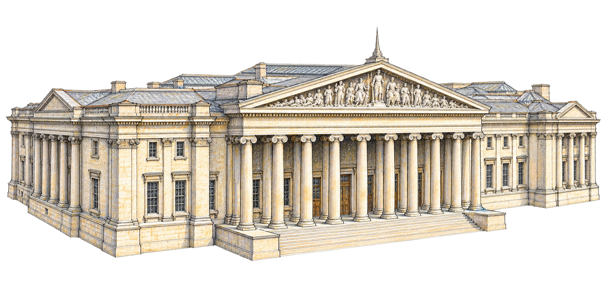
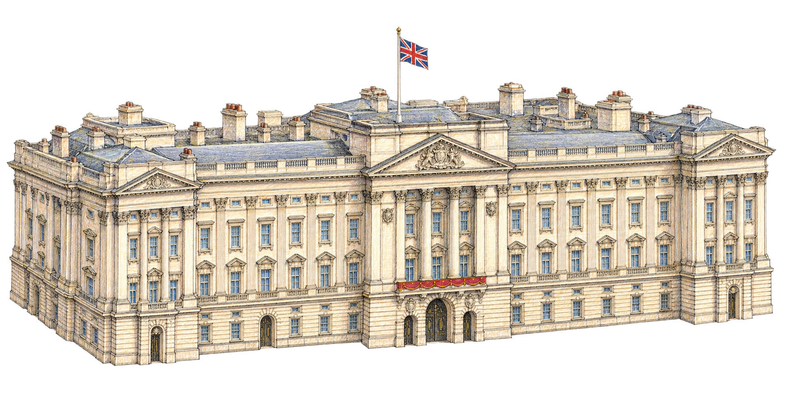
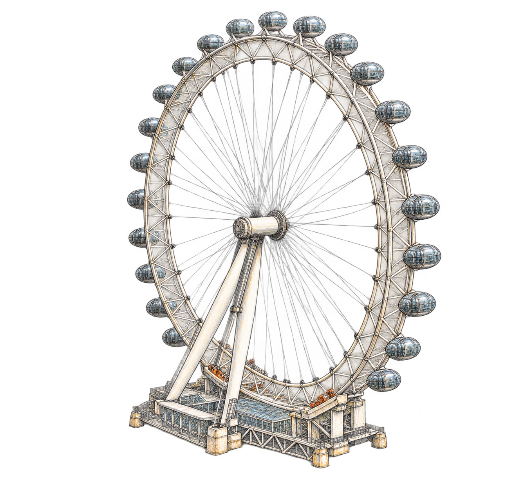
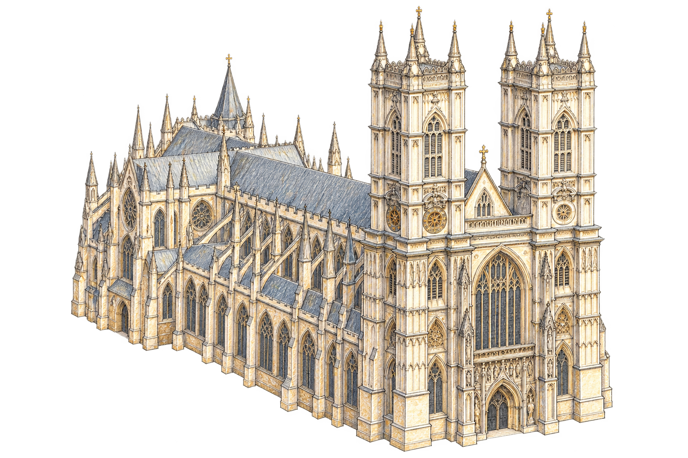
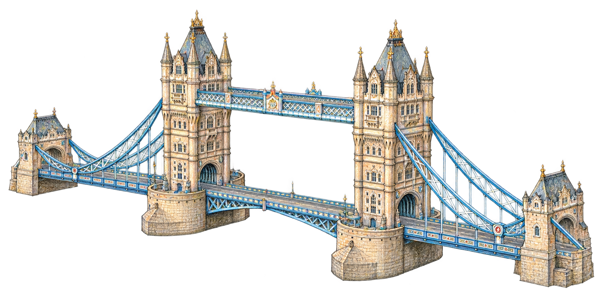

Hover to exploreTap to explore
Six landmarks. A city waiting to be coloured.






Illustrated map · Not to scale
This illustrated atlas works best with JavaScript enabled. Its six landmarks are Big Ben, Tower Bridge, British Museum, Buckingham Palace, London Eye and Westminster Abbey.